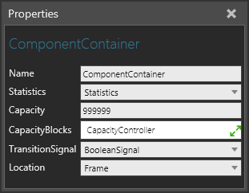
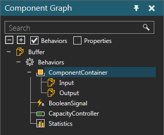

A Component Container allows you to contain components. The components can be moved into the container, placed there by other components as well as attached using a Python Script.

The ports of a Component Container are listed with the behavior in the Component Graph panel.

| Name | Description |
| Name | Defines the name of the container. |
| Statistics | Defines the Statistics behavior that collects statistics generated by the container. |
| Capacity | Defines the amount of components the can occupy the container at any given time. |
| CapacityBlocks | Defines a list of Capacity Controller behaviors for globally defining the container's capacity. Generally, a Capacity Controller is used as a variable for controlling the capacity of one or more containers in order to avoid deadlock situations. |
| TransitionSignal | Defines a Boolean Signal to signal the arrival and departure of a component in the container. A True value signals the arrival of a component. A False value signals the departure of a component. |
| Location | Defines a Frame feature that acts as the container's physical location. |